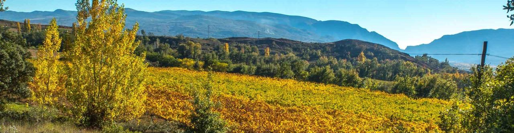

Ruta · Tremp
Ruta a tocar del poble de Vilamitjana que ens portarà a descobrir algunes petites joies amb misteri de la conca de Tremp. Coneixerem la curiositat de la petjada de Botzop , amb discreció i…